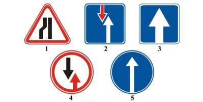
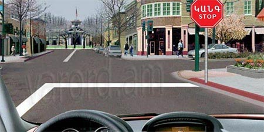
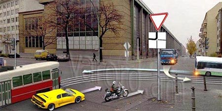
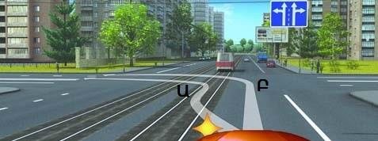
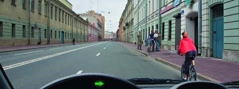
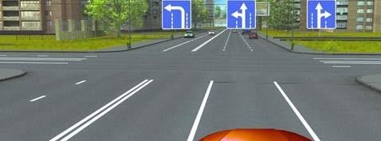
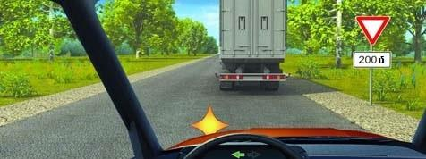
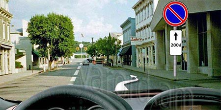
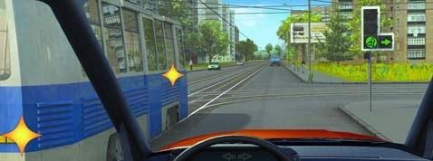
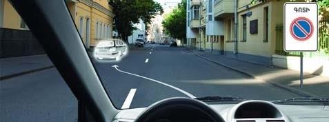

Թեստ 21
30:00
1. "Ճանապարհային երթևեկության անվտանգության ապահովման մասին" ՀՀ օրենքի համաձայն՝ կայանում է համարվում՝
2. Ճանապարհի մաս հանդիսանում են արդյո՞ք մայթը կամ կողնակները
3. Տրանսպորտային միջոցների շահագործումն արգելվում է, եթե`
4. Տրանսպորտային միջոցների շահագործումն արգելվում է, եթե`
5. Երեք գոտի ունեցող երկկողմ երթևեկությամբ ճանապարհի վրա Ձեզ անհրաժեշտ է կատարել ձախ շրջադարձ: Ո՞ր գոտուց կկատարեք տվյալ մանևրը:
6. Նշաններից ո՞րն է ցույց տալիս միակողմ երթևեկության ճանապարհի հատվածը:

7. Ինչպե՞ս պետք է վարվի վարորդը տվյալ իրադրությունում:

8. Տրանսպորտային միջոցները խաչմերուկը կանցնեն հետևյալ հերթականությամբ՝

9. Կայանումն արգելվում է`
10. Ո՞ր հետագծով է թույլատրված ձախ շրջադարձը

11. Աջ բակ մուտք գոծելու դեպքում պարտավոր ենք զիջել

12. Նշված գոտուց ո՞ր ուղղությամբ կարող եք շարունակել երթևեկությունը

13. Նշանները հայտնում են, որ

14. Նշված ճանապարհային նշանների ազդման գոտում թույլատրվու՞մ է կանգառ կատարել, ուղևորներ նստեցնելու նպատակով:

15. Կոշտ կամ ճկուն կցիչով քարշակման ժամանակ թույլատրվու՞մ է արդյոք ուղեւորների փոխադրումը քարշակվող ավտոբուսում։
16. Տրանսպորտային միջոցի վրա վթարային լուսային ազդանշանը պետք է միացված լինի`
17. Զիջել ճանապարհը տրամվայի վարորդին այս իրավիճակում

18. Թույլատրվում է արդյո՞ք կայանումը նշված վայրում
